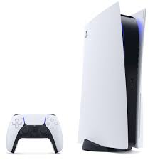
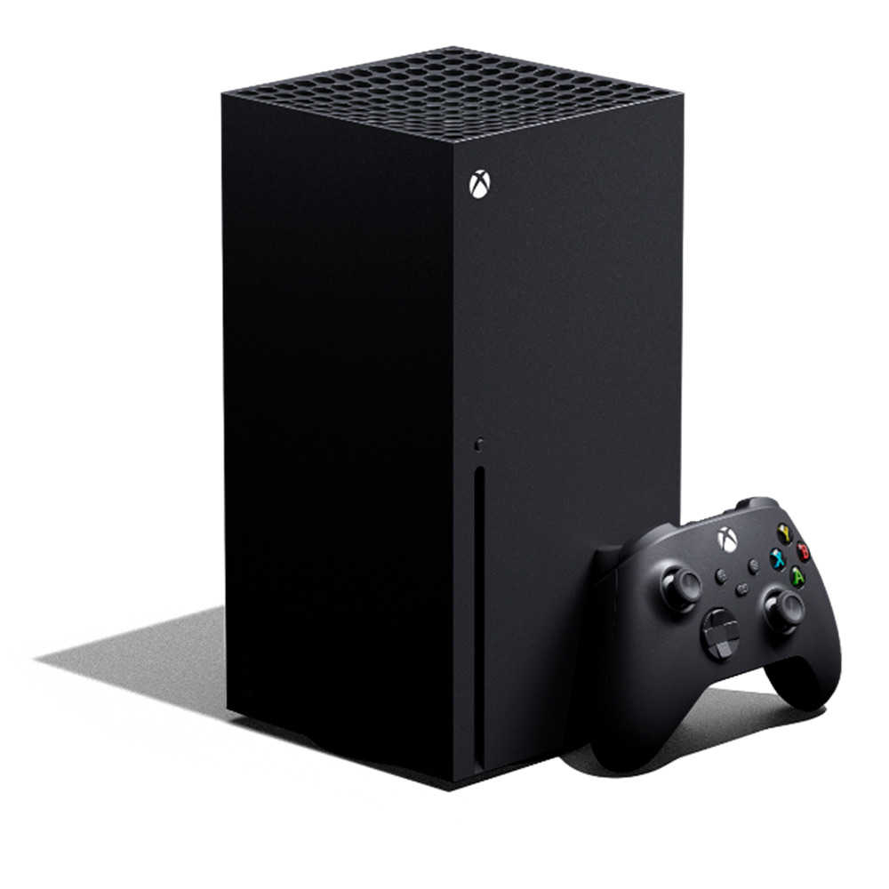
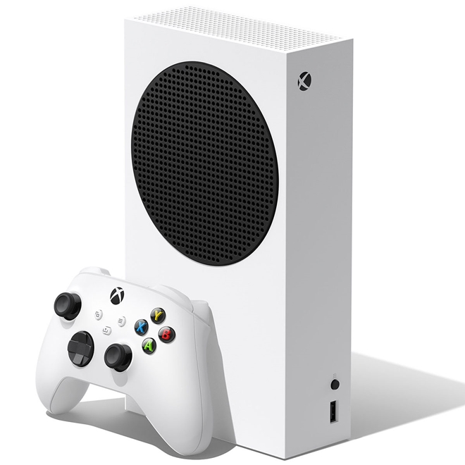
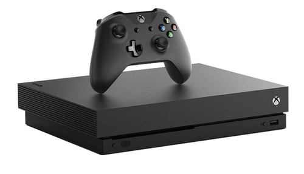

Loja Game Store

Loja Game Store
| Foto | Descrição | Preço (R$) | Quantidade disponível | Acessórios |
|---|---|---|---|---|
|  | Sony PlayStation 5 O PlayStation 5 (PS5) faz parte da nova geração de consoles da Sony, lançado no final de 2020 com design renovado, lembrando uma espaçonave (ou mesmo um aquecedor). |
R$ 4,700 | 20 | Um controle Dual Sense |
 |
Sony PlayStation 4 O PlayStation 4, ou simplesmente PS 4, é o tão aguardado console da quarta geração da Sony, trazendo uma arquitetura semi-customizada da AMD com 8 GB de memória RAM GDDR5 compartilhada entre CPU e GPU (placa de vídeo). |
R$ 2,800 | 60 | Dois Controles Dual Shock 4 |
|  | Xbox Series X O Xbox Series X é o novo console da Microsoft com lançamento previsto para o fim de 2020. O aparelho é sucessor do Xbox One e Xbox One X, e pode ser considerado um dos videogames mais poderosos do mundo. |
R$4,700 | 20 | Um controle e um jogo a sua escolha |
|  | Xbox Series S O Xbox Series S é o irmão menor do console lançado em 2020. Ainda assim ele conta com praticamente o mesmo hardware do Xbox Series X. |
R$3,700 | 40 | Um controle e um jogo a sua escolha |
|  | Xbox One X o Xbox One X tem, de fato, especificações respeitáveis, suportando nativamente a resolução 4K com suporte a HDR usando um chipset da AMD |
R$3,000 | 80 | Um controle e um jogo a sua escolha |